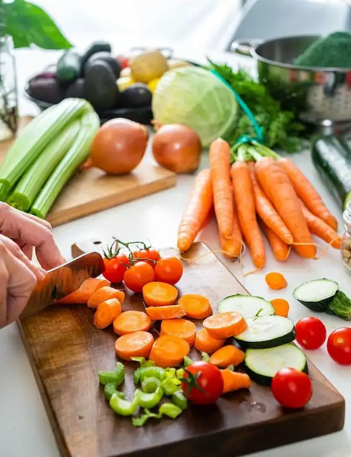
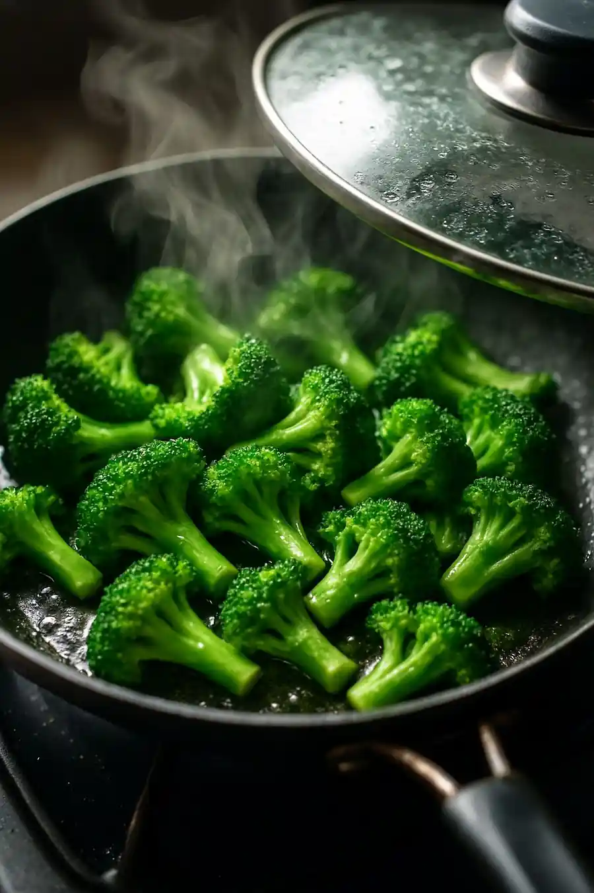
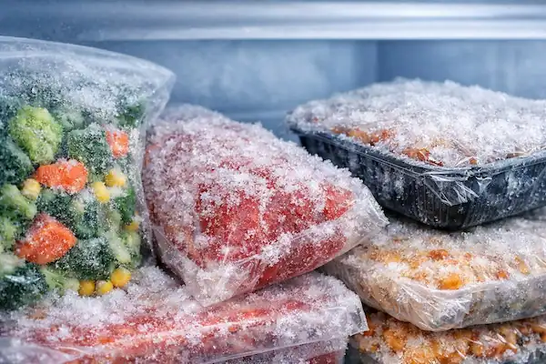
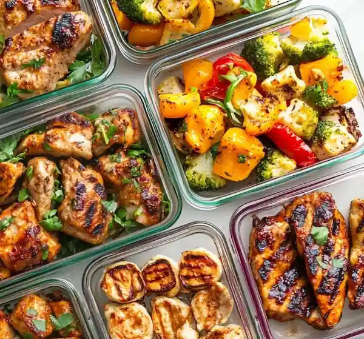

Browse freezer foods
View common foods that can be prepared ahead of time and stored for later meals.
Open Food GuideFreezer meal prep made simple
My Prep Pantry helps you organize freezer-friendly foods, basic prep tips, and simple planning ideas for everyday home meals.

Why it helps
Freezer meal prep can save time, reduce food waste, and make it easier to use ingredients before they go bad. This site keeps the information simple so it is easier to decide what to prepare, freeze, and use later.
What you can do

View common foods that can be prepared ahead of time and stored for later meals.
Open Food Guide
See basic preparation ideas like blanching, portioning, labeling, and storing.
View Tips
Use a short form to organize your prep day, meal count, and food ideas.
Use PlannerSimple routine
Look through the food guide and find items that fit your meals.
Save useful foods so you can come back to them later.
Use the planner to organize your prep day and meal ideas.
Start with the food guide, save a few useful items, and then create a simple plan.
Get Started